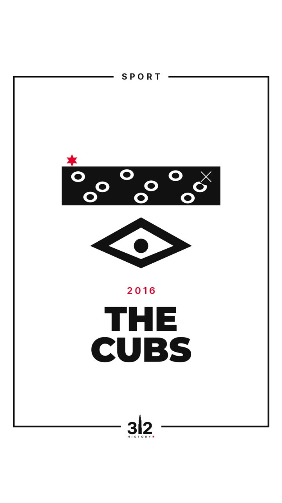
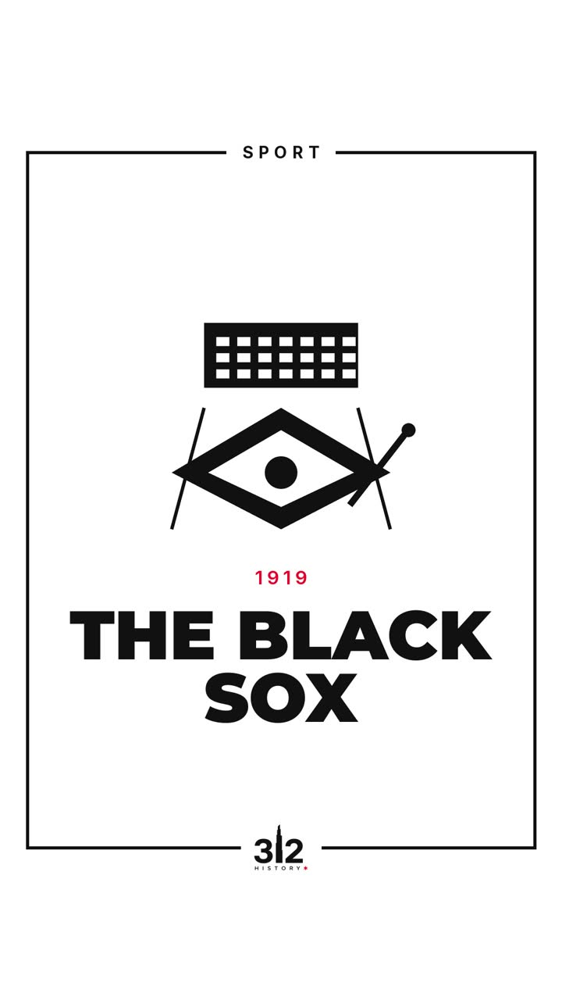
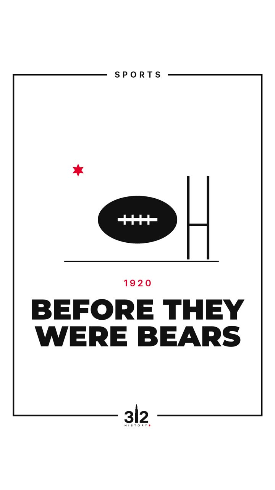

<!doctype html><html lang="en"><head><meta charset="utf-8">
<meta name="viewport" content="width=device-width,initial-scale=1">
<title>The 1906 World Series | 312 History</title><meta name="description" content="In 1906, Chicago&#x27;s two big-league teams met in the World Series.">
<link rel="canonical" href="https://312history.com/stories/92-the-1906-world-series.html">
<meta property="og:type" content="article"><meta property="og:site_name" content="312 History">
<meta property="og:title" content="The 1906 World Series | 312 History"><meta property="og:description" content="In 1906, Chicago&#x27;s two big-league teams met in the World Series.">
<meta property="og:image" content="https://312history.com/media/post92.jpg"><meta property="og:image:alt" content="The 1906 World Series | 312 History"><meta property="og:url" content="https://312history.com/stories/92-the-1906-world-series.html"><meta property="og:locale" content="en_US"><meta property="og:locale:alternate" content="ru_RU">
<meta name="twitter:card" content="summary_large_image"><meta name="twitter:title" content="The 1906 World Series | 312 History">
<meta name="twitter:description" content="In 1906, Chicago&#x27;s two big-league teams met in the World Series."><meta name="twitter:image" content="https://312history.com/media/post92.jpg">
<link rel="icon" href="../favicon.ico" sizes="any"><link rel="apple-touch-icon" href="../apple-touch-icon.png">
<script data-goatcounter="https://312history.goatcounter.com/count" async src="//gc.zgo.at/count.js"></script>

<link rel="preconnect" href="https://fonts.googleapis.com"><link rel="preconnect" href="https://fonts.gstatic.com" crossorigin>
<link href="https://fonts.googleapis.com/css2?family=Inter:wght@400;500;600&family=Montserrat:wght@600;800;900&display=swap" rel="stylesheet">
<script type="application/ld+json">{"@context": "https://schema.org", "@graph": [{"@type": "Article", "headline": "The 1906 World Series", "description": "In 1906, Chicago's two big-league teams met in the World Series.", "image": "https://312history.com/media/post92.jpg", "url": "https://312history.com/stories/92-the-1906-world-series.html", "mainEntityOfPage": "https://312history.com/stories/92-the-1906-world-series.html", "inLanguage": "en", "author": {"@type": "Person", "name": "Ariana Cholponkadyrova", "url": "https://312history.com/about.html"}, "publisher": {"@type": "Organization", "name": "312 History", "url": "https://312history.com/", "logo": {"@type": "ImageObject", "url": "https://312history.com/img/logo_white_transparent.png"}}, "articleSection": "Sports", "contentLocation": {"@type": "Place", "name": "Chicago", "address": {"@type": "PostalAddress", "addressLocality": "Chicago", "addressRegion": "IL", "addressCountry": "US"}}}, {"@type": "BreadcrumbList", "itemListElement": [{"@type": "ListItem", "position": 1, "name": "312 History", "item": "https://312history.com/"}, {"@type": "ListItem", "position": 2, "name": "The 1906 World Series", "item": "https://312history.com/stories/92-the-1906-world-series.html"}]}]}</script>
<link rel="stylesheet" href="../assets/style.css"></head><body>
<header class="nav"><a class="nav-logo" href="../index.html"></a>
<nav><a href="../index.html#map" data-i18n="nav.map">Map</a><a href="../index.html#topics" data-i18n="nav.stories">Stories</a><a href="../routes.html" data-i18n="nav.routes">Walking routes</a><a href="../fire-1871.html" data-i18n="nav.fire">Great Fire</a><a href="../about.html" data-i18n="nav.about">About</a><a href="../press.html" data-i18n="nav.press">Press</a></nav>
<div class="lang" role="group" aria-label="Language"><button data-lang="en">EN</button><button data-lang="ru">RU</button></div>
<a class="btn btn-red nav-ig" href="https://www.instagram.com/312history/" target="_blank" rel="noopener" aria-label="Instagram @312history">★ IG</a></header>
<main class="story">
<section class="story-hero"><div class="story-text"><span class="kicker red">Sports · Post #92</span>
<div class="big-year">1906</div><h1>THE 1906 WORLD SERIES</h1><p class="lead">In 1906, Chicago&#x27;s two big-league teams met in the World Series.</p>
<p class="place">◉ Chicago <span>(map pin approximate)</span></p>
<a class="btn btn-red" href="https://www.instagram.com/312history/" target="_blank" rel="noopener">Follow on Instagram ★</a></div>
<div class="reel"><video controls playsinline preload="none" poster="../media/post92.jpg" src="../media/post92.mp4"></video><span>Watch the reel</span></div></section>
<section class="facts"><h2 class="sec-title"><span>★</span> 5 FACTS</h2><ol><li class="fact reveal"><span class="star">★</span><p>In October 1906 the Chicago Cubs and the Chicago White Sox played each other in the World Series.</p></li><li class="fact reveal"><span class="star">★</span><p>The Cubs had won 116 games that season and were favored to win.</p></li><li class="fact reveal"><span class="star">★</span><p>The White Sox had a .230 team batting average, last in the American League, and were nicknamed the &quot;Hitless Wonders.&quot;</p></li><li class="fact reveal"><span class="star">★</span><p>In Game 3, White Sox pitcher Ed Walsh allowed two hits and struck out 12 Cubs in a 3–0 win.</p></li><li class="fact reveal"><span class="star">★</span><p>The White Sox won the Series four games to two.</p></li></ol></section>
<section class="sources"><h2 class="sec-title small">PRIMARY SOURCES & CREDITS</h2>
<p><b>Sources:</b> SABR, Baseball Almanac, MLB.com.</p><p><b>Images:</b> Images: Library of Congress, public domain;</p>
<details><summary>Full source list</summary><ul><li>fj1900.jpg: {&#x27;title&#x27;: &#x27;File:Fielder Jones LCCN2014686409.jpg&#x27;, &#x27;page&#x27;: &#x27;<a href="https://commons.wikimedia.org/wiki/File:Fielder_Jones_LCCN2014686409.jpg&#x27;," target="_blank" rel="noopener">https://commons.wikimedia.org/wiki/File:Fielder_Jones_LCCN2014686409.j…</a> &#x27;licence&#x27;: &#x27;Public domain&#x27;, &#x27;usage&#x27;: &#x27;Public domain&#x27;, &#x27;artist&#x27;: &#x27;Bain News Service, publisher&#x27;, &#x27;credit&#x27;: &#x27;Library of Congress Catalog: <a href="https://lccn.loc.gov/2014686409" target="_blank" rel="noopener">https://lccn.loc.gov/2014686409</a> Image download: <a href="https://cdn.loc.gov/service/pnp/ggbain/06400/06417v.jpg" target="_blank" rel="noopener">https://cdn.loc.gov/service/pnp/ggbain/06400/06417v.jpg</a> Original url: <a href="https://www.loc.gov/pictures/item/2014686409/&#x27;," target="_blank" rel="noopener">https://www.loc.gov/pictures/item/2014686409/&#x27;,</a> &#x27;date&#x27;: &#x27;1900&#x27;, &#x27;url&#x27;: &#x27;<a href="https://thumb.wikimedia.org/wikipedia/commons/thumb/f/f6/Fielder_Jones_LCCN2014686409.jpg/1920px-Fielder_Jones_LCCN2014686409.jpg?utm_source=commons.wikimedia.org&amp;utm_campaign=imageinfo&amp;utm_content=thumbnail&#x27;}" target="_blank" rel="noopener">https://thumb.wikimedia.org/wikipedia/commons/thumb/f/f6/Fielder_Jones…</a></li><li>fjcard.jpg: {&#x27;title&#x27;: &#x27;File:Fielder Jones baseball card.jpg&#x27;, &#x27;page&#x27;: &#x27;<a href="https://commons.wikimedia.org/wiki/File:Fielder_Jones_baseball_card.jpg&#x27;," target="_blank" rel="noopener">https://commons.wikimedia.org/wiki/File:Fielder_Jones_baseball_card.jp…</a> &#x27;licence&#x27;: &#x27;Public domain&#x27;, &#x27;usage&#x27;: &#x27;Public domain&#x27;, &#x27;artist&#x27;: &#x27;American Tobacco Company&#x27;, &#x27;credit&#x27;: &#x27;Library of Congress Prints and Photographs Division. Benjamin K. Edwards Baseball Card Collection. <a href="http://hdl.loc.gov/loc.pnp/bbc.0896f&#x27;," target="_blank" rel="noopener">http://hdl.loc.gov/loc.pnp/bbc.0896f&#x27;,</a> &#x27;date&#x27;: &#x27;1909-11&#x27;, &#x27;url&#x27;: &#x27;<a href="https://upload.wikimedia.org/wikipedia/commons/8/89/Fielder_Jones_baseball_card.jpg?utm_source=commons.wikimedia.org&amp;utm_campaign=imageinfo&amp;utm_content=thumbnail_unscaled&#x27;}" target="_blank" rel="noopener">https://upload.wikimedia.org/wikipedia/commons/8/89/Fielder_Jones_base…</a></li><li>ew1911.jpg: {&#x27;title&#x27;: &#x27;File:Ed Walsh portrait 1911.jpg&#x27;, &#x27;page&#x27;: &#x27;<a href="https://commons.wikimedia.org/wiki/File:Ed_Walsh_portrait_1911.jpg&#x27;," target="_blank" rel="noopener">https://commons.wikimedia.org/wiki/File:Ed_Walsh_portrait_1911.jpg&#x2…</a> &#x27;licence&#x27;: &#x27;Public domain&#x27;, &#x27;usage&#x27;: &#x27;Public domain&#x27;, &#x27;artist&#x27;: &#x27;Paul Thompson&#x27;, &#x27;credit&#x27;: &#x27;Library of Congress [1]&#x27;, &#x27;date&#x27;: &#x27;1911-05-13&#x27;, &#x27;url&#x27;: &#x27;<a href="https://thumb.wikimedia.org/wikipedia/commons/thumb/b/b7/Ed_Walsh_portrait_1911.jpg/1920px-Ed_Walsh_portrait_1911.jpg?utm_source=commons.wikimedia.org&amp;utm_campaign=imageinfo&amp;utm_content=thumbnail&#x27;}" target="_blank" rel="noopener">https://thumb.wikimedia.org/wikipedia/commons/thumb/b/b7/Ed_Walsh_port…</a></li><li>fc1909a.jpg: {&#x27;title&#x27;: &#x27;File:Frank Chance, Chicago Cubs, baseball card portrait LCCN2008675170.jpg&#x27;, &#x27;page&#x27;: &#x27;<a href="https://commons.wikimedia.org/wiki/File:Frank_Chance,_Chicago_Cubs,_baseball_card_portrait_LCCN2008675170.jpg&#x27;," target="_blank" rel="noopener">https://commons.wikimedia.org/wiki/File:Frank_Chance,_Chicago_Cubs,_ba…</a> &#x27;licence&#x27;: &#x27;Public domain&#x27;, &#x27;usage&#x27;: &#x27;Public domain&#x27;, &#x27;artist&#x27;: &#x27;American Tobacco Company, sponsor&#x27;, &#x27;credit&#x27;: &#x27;Library of Congress Catalog: <a href="https://lccn.loc.gov/2008675170" target="_blank" rel="noopener">https://lccn.loc.gov/2008675170</a> Image download: <a href="https://cdn.loc.gov/service/pnp/bbc/0700/0710/0716fv.jpg" target="_blank" rel="noopener">https://cdn.loc.gov/service/pnp/bbc/0700/0710/0716fv.jpg</a> Original url: <a href="https://www.loc.gov/pictures/item/2008675170/&#x27;," target="_blank" rel="noopener">https://www.loc.gov/pictures/item/2008675170/&#x27;,</a> &#x27;date&#x27;: &#x27;1909&#x27;, &#x27;url&#x27;: &#x27;<a href="https://upload.wikimedia.org/wikipedia/commons/c/c1/Frank_Chance%2C_Chicago_Cubs%2C_baseball_card_portrait_LCCN2008675170.jpg?utm_source=commons.wikimedia.org&amp;utm_campaign=imageinfo&amp;utm_content=thumbnail_unscaled&#x27;}" target="_blank" rel="noopener">https://upload.wikimedia.org/wikipedia/commons/c/c1/Frank_Chance%2C_Ch…</a></li><li>fc1909b.jpg: {&#x27;title&#x27;: &#x27;File:Frank Chance, Chicago Cubs, baseball card portrait LCCN2008675171.jpg&#x27;, &#x27;page&#x27;: &#x27;<a href="https://commons.wikimedia.org/wiki/File:Frank_Chance,_Chicago_Cubs,_baseball_card_portrait_LCCN2008675171.jpg&#x27;," target="_blank" rel="noopener">https://commons.wikimedia.org/wiki/File:Frank_Chance,_Chicago_Cubs,_ba…</a> &#x27;licence&#x27;: &#x27;Public domain&#x27;, &#x27;usage&#x27;: &#x27;Public domain&#x27;, &#x27;artist&#x27;: &#x27;American Tobacco Company, sponsor&#x27;, &#x27;credit&#x27;: &#x27;Library of Congress Catalog: <a href="https://lccn.loc.gov/2008675171" target="_blank" rel="noopener">https://lccn.loc.gov/2008675171</a> Image download: <a href="https://cdn.loc.gov/service/pnp/bbc/0700/0710/0717fv.jpg" target="_blank" rel="noopener">https://cdn.loc.gov/service/pnp/bbc/0700/0710/0717fv.jpg</a> Original url: <a href="https://www.loc.gov/pictures/item/2008675171/&#x27;," target="_blank" rel="noopener">https://www.loc.gov/pictures/item/2008675171/&#x27;,</a> &#x27;date&#x27;: &#x27;1909&#x27;, &#x27;url&#x27;: &#x27;<a href="https://upload.wikimedia.org/wikipedia/commons/9/99/Frank_Chance%2C_Chicago_Cubs%2C_baseball_card_portrait_LCCN2008675171.jpg?utm_source=commons.wikimedia.org&amp;utm_campaign=imageinfo&amp;utm_content=thumbnail_unscaled&#x27;}" target="_blank" rel="noopener">https://upload.wikimedia.org/wikipedia/commons/9/99/Frank_Chance%2C_Ch…</a></li></ul></details></section>
<section class="related"><h2 class="sec-title small">MORE SPORTS</h2><div class="grid"><a class="card" href="../stories/37-the-cubs-108-years.html" data-topic="SPORTS" data-area="NORTH" data-era="1900" data-q="the cubs: 108 years wrigleyville they won in 1908. then chicago waited 108 years."><div class="card-img"></div>
<div class="card-meta"><span class="kicker"><span data-i18n="topic.SPORTS">Sports</span>  · 1908</span><h3>The Cubs: 108 Years</h3></div></a><a class="card" href="../stories/38-1919-the-black-sox.html" data-topic="SPORTS" data-area="SOUTH" data-era="1900" data-q="1919: the black sox south side eight players, one fixed world series, and bans for life."><div class="card-img"></div>
<div class="card-meta"><span class="kicker"><span data-i18n="topic.SPORTS">Sports</span>  · 1919</span><h3>1919: The Black Sox</h3></div></a><a class="card" href="../stories/79-before-they-were-bears.html" data-topic="SPORTS" data-area="NORTH" data-era="1900" data-q="before they were bears cubs park (wrigley field) chicago&#x27;s football team began as a starch company&#x27;s squad in decatur."><div class="card-img"></div>
<div class="card-meta"><span class="kicker"><span data-i18n="topic.SPORTS">Sports</span>  · 1920</span><h3>Before They Were Bears</h3></div></a></div>
<div class="pn"><a href="91-the-oriental-institute.html">← The Oriental Institute</a><a href="93-the-lake-tunnel.html">The Lake Tunnel →</a></div></section>
</main><footer class="foot"><div class="foot-row"><div><p data-i18n="foot.tag">Chicago history, one story at a time. Every fact checked against sources.</p>
<a class="ig-link" href="https://www.instagram.com/312history/" target="_blank" rel="noopener" data-i18n="foot.follow">Follow @312history on Instagram ★</a></div></div>
<div class="foot-btns"><a class="btn btn-line light" href="https://www.instagram.com/312history/" target="_blank" rel="noopener" data-i18n="btn.ig">Instagram @312history</a><a class="btn btn-red" href="https://ko-fi.com/312history" target="_blank" rel="noopener" data-i18n="btn.support">Support the project ★</a></div>
<p class="draft" data-i18n="foot.credits">Images: Wikimedia Commons, Library of Congress and other public-domain / CC sources as credited on each story. Map pins are approximate.</p></footer>
<script src="../assets/i18n.js"></script><script src="../assets/site.js"></script></body></html>